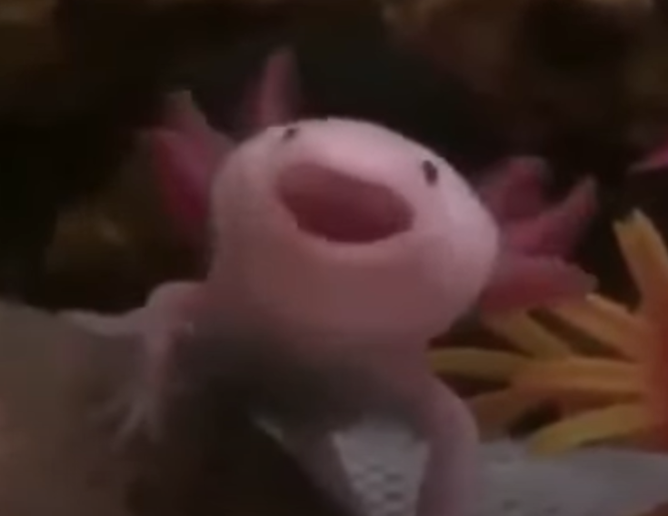
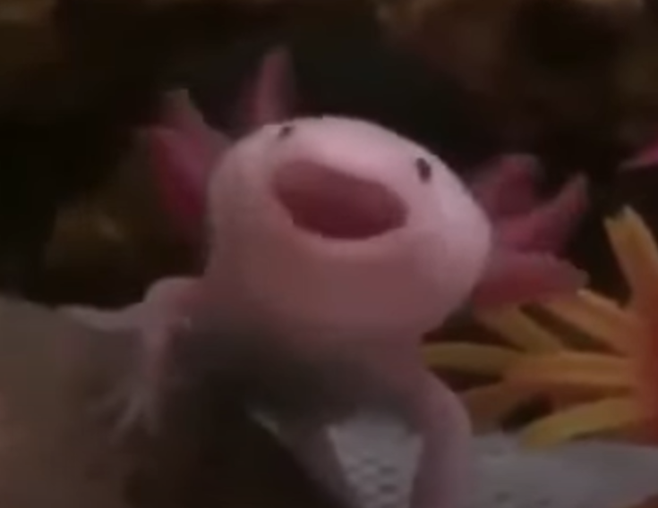

Yo soy Paco un ajolote 🍫🥥🥨
Soy editor de videos y estudiante de la utm.
 

El ajolote es un anfibio endémico de México. Son conocidos por su apariencia única y su capacidad de regeneración. Estos fascinantes animales son un símbolo de la biodiversidad de México y se pueden encontrar en lagos y ríos de la región.